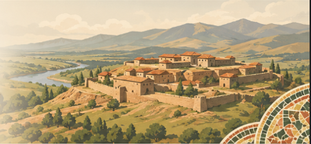

El yacimiento romano de
VAREIA
Descubre la historia de Vareia, el antiguo asentamiento romano en La Rioja, a través de sus restos, sus reconstrucciones y un viaje interactivo al pasado.

El yacimiento romano de
Descubre la historia de Vareia, el antiguo asentamiento romano en La Rioja, a través de sus restos, sus reconstrucciones y un viaje interactivo al pasado.

Tu aportación ayuda a mantener vivo este proyecto educativo y a divulgar la historia del patrimonio romano de La Rioja.
Tu interés y colaboración son fundamentales para continuar difundiendo la historia de Vareia.
Esta es una demostración del formulario. No se ha realizado ningún cobro.
Vareia · La Rioja
Explora el plano de reconstrucción de Vareia y descubre cómo pudo ser el asentamiento en época romana.

Plano ilustrativo de la antigua Vareia.